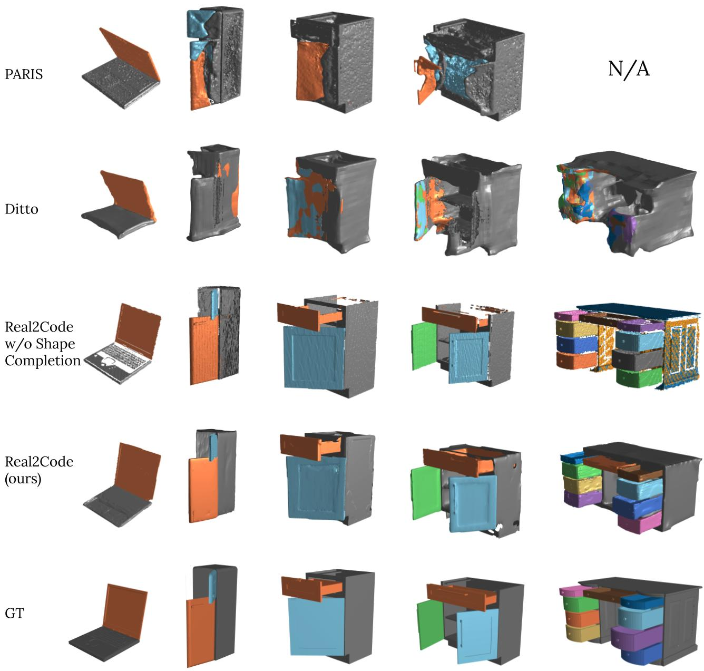

Real2Code: Reconstruct Articulated Objects
via Code Generation
Mandi Zhao1 , Yijia Weng1, Dominik Bauer 2, Shuran Song 1,2
1 Stanford University 2 Columbia University
Arxiv | Code | Data
We present Real2Code, a novel approach to reconstructing articulated objects via code generation. Given visual observations of an object, we first reconstruct its part geometry using an image segmentation model and a shape completion model. We then represent the object parts with oriented bounding boxes, which are input to a fine-tuned large language model (LLM) to predict joint articulation as code. By leveraging pre-trained vision and language models, our approach scales elegantly with the number of articulated parts, and generalizes from synthetic training data to real world objects in unstructured environments. Experimental results demonstrate that Real2Code significantly outperforms previous state-of-the-art in reconstruction accuracy, and is the first approach to extrapolate beyond objects' structural complexity in the training set, and reconstructs objects with up to 10 articulated parts. When incorporated with a stereo reconstruction model, Real2Code also generalizes to real world objects from a handful of multi-view RGB images, without the need for depth or camera information.
Method

Given unstructured multi-view RGB images, we leverage the pre-trained DUSt3R model to obtain dense 2D-to-3D pointmaps, and use a fine-tuned 2D segmentation model SAM to perform part-level segmentation and project to segmented 3D point clouds. A learned shape-completion model takes partial point cloud inputs and predicts a dense occupancy field, which is used for part-level mesh extraction. We fine-tune a large language model (LLM) CodeLlama that takes mesh information in the form of oriented bounding boxes, and outputs full code descriptions of the object that can directly be executed in simulation.
Qualitative Results
We evaluate on objects with a range of varying kinematic complexities, from a two-part laptop to a ten-part multidrawer table. Whereas all methods can handle the simpler laptop articulation, baseline methods struggle as the number of object parts increases, and Real2Code performs reconstruction much more accurately. PARIS runs out of memory and fails to run on the ten-part table (N/A).

We evaluate Real2Code on real world objects using RGB data. For each object, we use 10 pose-free RGB images captured in-the-wild and run Real2Code with DUSt3R[8]. We show one example RGB input (1st row), segmented point clouds (2nd row) and full reconstruction (3rd row) for each object.
Acknowledgements
This work was supported in part by the Toyota Research Institute, NSF Award \#2143601, Sloan Fellowship. The views and conclusions contained herein are those of the authors and should not be interpreted as necessarily representing the official policies, either expressed or implied, of the sponsors. The authors would like to thank Zhenjia Xu for the real world data collection, Samir Gadre for helpful pointers on LLM fine-tuning, Cheng Chi for help with training our shape completion model training, and all members of REALab: Zeyi Liu, Xiaomeng Xu, Chuer Pan, Huy Ha, Yihuai Gao, Mengda Xu, Austin Patel, et. al. for valuable feedback and discussion on the paper manuscript. We also thank administrator of Stanford EE department, namely Kenny Green, Steve B. Cousins and Mary K. McMahon for their support during real world data collection.